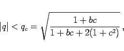
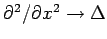

Inhalt Index DeskTop Bronstein

 Differentialgleichungen Partielle Differentialgleichungen Nichtlineare partielle Differentialgleichungen, Solitonen
Differentialgleichungen Partielle Differentialgleichungen Nichtlineare partielle Differentialgleichungen, Solitonen


wobei die beiden komplexen Parameter b,c systemspezifisch sind. Die Gleichung (9.159) ist ein Beispiel für eine nichtlineare dissipative Evolutionsgleichung.
Lösungen existieren für |q|<1 und sinmd stabil gegenüber schwachen langwelligen Störungen vq(x,t) in einem Wellenband
|  | (9.161) |
wobei qc die ECKHAUS-Wellenzahl ist. Für 1+bc <0 (NEWELL-Kriterium) sind keine der Wellen (9.160) stabil (BENJAMIN-FEIR-Instabilität) und die Lösungen von (9.159) sind raum-zeitlich ungeordnet; man spricht dann auch vom raum-zeitlichen Chaos.
In zwei Raumdimensionen besitzt (9.159) mit der Ersetzung  Spirallösungen, wie sie z.B. bei chemischen Reaktionen zu beobachten sind.
Auf Grund der Nichtlinearität sind lineare Superpositionen der Wellen (9.160) keine Lösungen von (9.159).